CLAUDE’S PICK


KVBoost — LLM 추론의 청크 단위 KV 캐시 재사용으로 4.49배 속도 향상
트랜스포머 기반 LLM의 프리필 단계에서 매 요청마다 키-값 텐서를 재계산해야 하는 병목 현상이 발생한다. 기존 프리픽스 캐싱은 연속된 프리픽스 공유만 지원해 효율성이 제한적이다. KVBoost는 듀얼-해시 키 스킴으로 위치 정보와 콘텐츠 정보를 분리하여 공유 콘텐츠의 위치 관계없이 청크 단위 캐시 재사용을 가능하게 한다. 또한 선택적 재계산과 캐시 블렌드 재계산 전략으로 주의 경계 오류를 해결하고, 비대칭 KV 양자화와 중요도 기반 제거를 통해 고정 메모리 예산 내에서 최적화한다.
핵심 포인트: 핵심 성과: 버그 지역화 1,000개 샘플에서 time-to-first-token을 639.1ms에서 142.4ms로 4.49배 단축했으며, 프리픽스 캐싱 대비 16% 성능 향상을 달성하면서 정확도 손실 없음(99.2% vs 99.1%).
논문 (Papers)
forge-harness — AI 에이전트 코드 변경을 git 훅으로 검증하는 품질 게이트
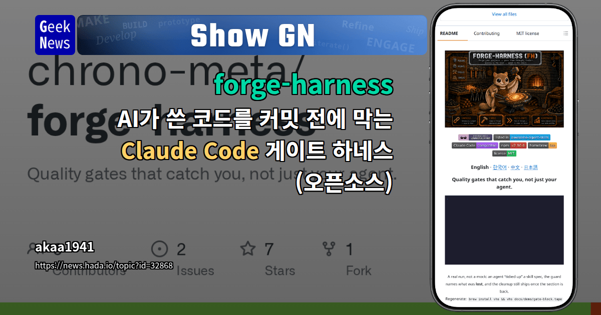
AI 에이전트가 생성한 코드의 신뢰성을 보장하기 위해 커밋 직전에 자동 검증을 수행하는 도구. git 훅으로 변경사항을 검사하여 통과하지 못하면 커밋을 차단한다. 프로덕션 DB 삭제나 클라우드 자원 무단 생성 같은 AI 에이전트의 치명적 실수를 사전에 방지하는 기계화된 품질 관리 체계를 제공한다.
핵심 포인트: 핵심 기여: 하루 8건의 코드 문제 중 7건을 커밋 게이트에서 사전 차단했으며, npm에 설치 없는 실행(npx @chrono-meta/fh-gate)으로 언어와 프레임워크를 가리지 않는 범용 검증 기능을 제공한다.
기타 (Others)

CLI-Anything — AI 에이전트를 위한 자동 CLI 생성 프레임워크
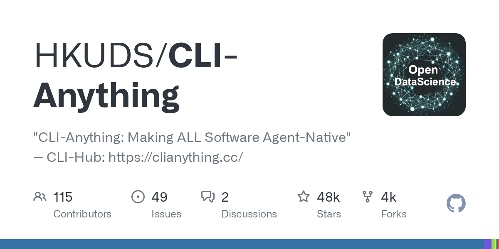
기존 소프트웨어를 AI 에이전트가 직접 제어할 수 없다는 문제를 해결하기 위해 홍콩대 데이터인텔리전스랩이 공개한 자동 CLI 생성 프레임워크. 대상 소프트웨어의 소스 코드와 내부 API를 분석하여 그 기능을 그대로 노출하는 명령줄 인터페이스를 자동으로 생성한다. 분석에서 배포까지 7단계 파이프라인이 완전 자동화되며, 생성된 CLI는 사람용 대화형 REPL과 에이전트용 JSON 출력 모드를 동시에 지원한다. GIMP, Blender, LibreOffice, QGIS 등 18개 이상의 애플리케이션에 이미 적용된 결과물이 공개되어 있다.
핵심 포인트: 핵심 성과: 18개 이상의 실제 애플리케이션에 자동 CLI 생성 적용 완료, 사람과 AI 에이전트 모두 호환되는 듀얼 인터페이스 제공, 전체 개발 프로세스를 7단계 자동 파이프라인으로 처리하여 소프트웨어별 통합 개발 시간 단축
🔗 github.com/HKUDS/CLI-Anything
GitHub
AI & RESEARCH
GLM-5.3-Flash — Z.ai의 효율적 멀티모달 대형 언어 모델
대형 언어 모델의 높은 비용과 제한된 멀티모달 지원이 개발자들의 접근성을 저해하고 있다. Z.ai가 공개한 GLM-5.3-Flash는 320B 파라미터 중 토큰당 18B만 활성화하는 효율적 아키텍처로 텍스트, 이미지, 영상을 통합 처리하며, MIT 라이선스 공개와 태스크당 0.045달러의 경쟁력 있는 가격으로 고성능을 제공한다. Terminal Bench에서 84.3, DeepSWE에서 63.4, GDPval-AA에서 1773의 벤치마크 성과를 달성했다.
핵심 포인트: 핵심 성과: 종합 지수 57점을 태스크당 0.045달러에 달성하며 동급 모델 대비 20배 이상 저렴, MIT 라이선스로 자유로운 수정 및 상업화 가능, 멀티모달 처리와 100만 토큰 컨텍스트 윈도우 지원.
기타 (Others)
Scroll: AI 에이전트의 장기 기억을 파이썬 코드로 관리하는 알리바바 연구
AI 에이전트의 장기 기억 문제는 대화 이력이 컨텍스트 윈도우를 초과할 때 텍스트 압축으로 인한 정보 손실이 발생한다. Scroll은 이를 해결하기 위해 각 세션을 실행 가능한 환경으로 취급하여 독립된 파이썬 커널에 상태를 저장하고, 모델이 직접 작성한 코드로 필요한 데이터만 조회하는 방식을 제시한다. 컨텍스트 관리를 프로그래밍 과제로 전환함으로써 모델의 코딩 능력 향상에 따라 에이전트의 기억력과 효율도 함께 개선되는 구조를 실현한다.
핵심 포인트: 핵심 기여: 이벤트 로그와 샌드박스 파이썬 커널 기반의 지속적인 네임스페이스 유지로, 프롬프트 직렬화 대신 변수 바인딩 방식으로 컨텍스트를 관리하며 모델 코딩 능력과 에이전트 성능의 상향 순환을 실현.
논문 (Papers)
MultiBrain — AI 에이전트의 멀티태스킹 병목 현상 해결
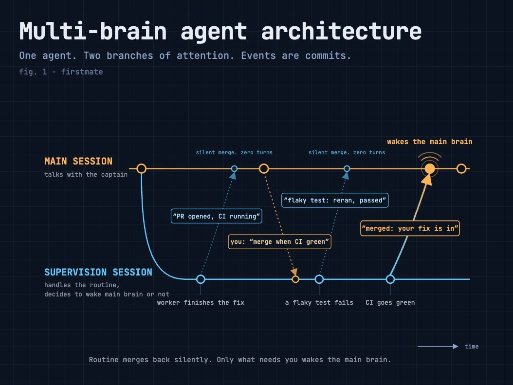
AI 에이전트가 여러 백그라운드 루프를 동시에 처리하면서 사용자의 요청에 응답하지 못하는 문제를 해결하는 설계. 에이전트가 두 개의 병렬 세션을 실행하여 메인 세션은 사용자 대화에, 백그라운드 세션은 이벤트 판정에만 집중하도록 분리한다. 두 세션의 맥락을 깃 머지 방식으로 병합하여 정보 손실을 방지하고, 프롬프트 캐시를 유지하여 비용 효율성을 극대화한다.
핵심 포인트: 핵심 기여: 이벤트 판정 전담 백그라운드 세션을 저비용 모델로 운영하면서 프롬프트 캐시 유지로 요청 비용 감소, 사용자 대화 중단 없이 무제한 백그라운드 루프 처리 가능
🔗 threads.com/@unclejobs.ai/post/Dce_pIrjJx…
기타 (Others)
jina-reranker-v3.5 — 0.6B 모델로 4B 급 성능 달성하는 효율적 재순위매김
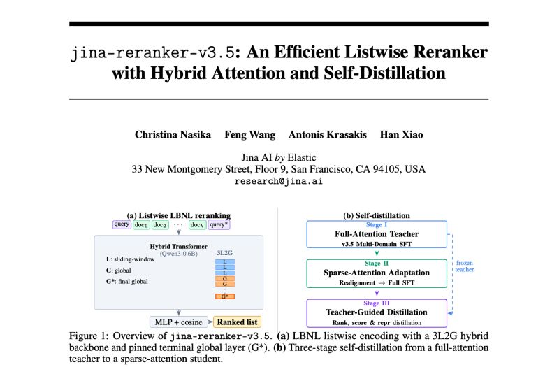
대규모 언어 모델의 재순위매김 단계에서 모델 크기 대비 성능 효율을 개선하는 문제를 해결하는 논문. 하이브리드 주의 메커니즘으로 28개 레이어 중 17개를 슬라이딩 윈도우 방식으로 선택적 처리하며, 동일 크기의 교사-학생 모델을 이용한 자가증류로 성능을 최적화한다. 법률, 의료, 금융, 다언어, 반정형 데이터 등 재순위매김 모델이 취약한 영역에 특화된 데이터 수집 전략으로 일반화 능력을 강화한다.
핵심 포인트: 핵심 성과: 0.6B 파라미터로 기존 4B 모델 수준의 재순위매김 성능을 달성하며, 3L2G 하이브리드 주의 스케줄로 지역 레이어의 주의 복잡도를 이차에서 선형으로 감소시킴. 자가증류 3단계(프로젝션 재훈련, 전체 미세조정, 교사 유도 증류)를 통해 희소 주의 마스크 적응으로 최대 99%의 성능 유지를 실현.
🔗 linkedin.com/posts/singhsidhukuldeep_can…
기타 (Others)

Andrew Ng AI Engineering Skills Map — AI 앱 구축 역량을 6가지로 체계화
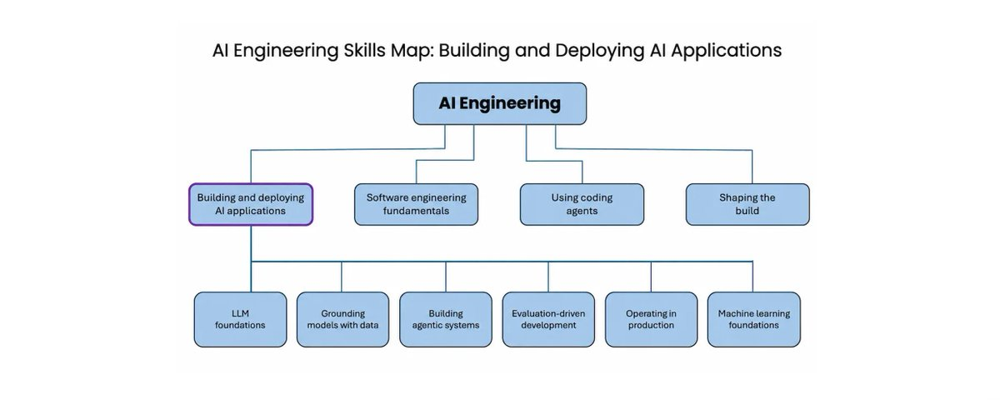
AI 시대 개발자에게 필요한 역량을 정의하는 과정에서 앤드류 응이 AI 응용프로그램 구축 및 배포 능력을 6가지 하위 역량으로 세분화했다. 기존 소프트웨어와 달리 AI 앱의 출력은 예측 불가능하므로 반복적인 개발 방식이 필요하며, LLM 기초, 데이터 그라운딩, 에이전트 시스템, 평가 주도 개발, 프로덕션 운영, 머신러닝 기초를 습득해야 한다고 제시한다.
핵심 포인트: 핵심 기여: 1만 건 이상의 채용 공고와 전문가 인터뷰, 설문을 분석해 AI 시대 개발자의 핵심 역량을 체계화했으며, 단순 코딩 능력을 넘어 AI의 불확실성 평가, 에이전트 지휘, 제품 기획까지 포함하는 종합적 스킬맵을 제시했다.
🔗 x.com/AndrewYNg/status/2090840747738374568
기타 (Others)
Marin 535B-A23B — 535억 파라미터 대규모 모델 학습 과정 실시간 공개
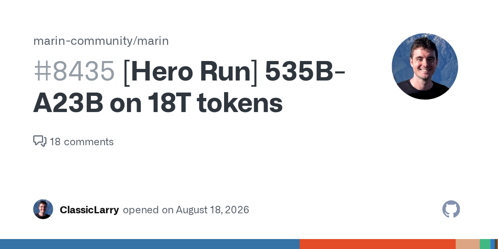
대규모 언어 모델 학습 과정이 일반에 공개되지 않아 모델 개발의 투명성과 재현성이 제한되는 문제를 해결하기 위해 스탠퍼드 퍼시 량 교수팀이 Marin 535B-A23B 모델의 실시간 학습 데이터를 공개했다. 총 535B 파라미터, 활성 23B의 MoE 모델이 GB200 NVL72 11대에서 18.75조 토큰을 3개월간 학습하며, 데이터 구성, 설정, 손실 곡선까지 W&B 대시보드에서 실시간 추적 가능하다.
핵심 포인트: 핵심 성과: 사전학습 80%, 미드트레이닝 20% 구성으로 2.7e24 FLOPs 규모의 모델 학습을 진행 중이며, 사전 검증을 위해 1.6B부터 27.7B까지 4개의 소규모 모델로 문제를 점검하고 손실 변화를 사전 예측하여 대규모 학습의 안정성을 확보했다.
🔗 github.com/marin-community/marin/issues/8…
기타 (Others)
Andrew Ng — 2026년 AI 엔지니어가 갖춰야 할 필수 스킬맵
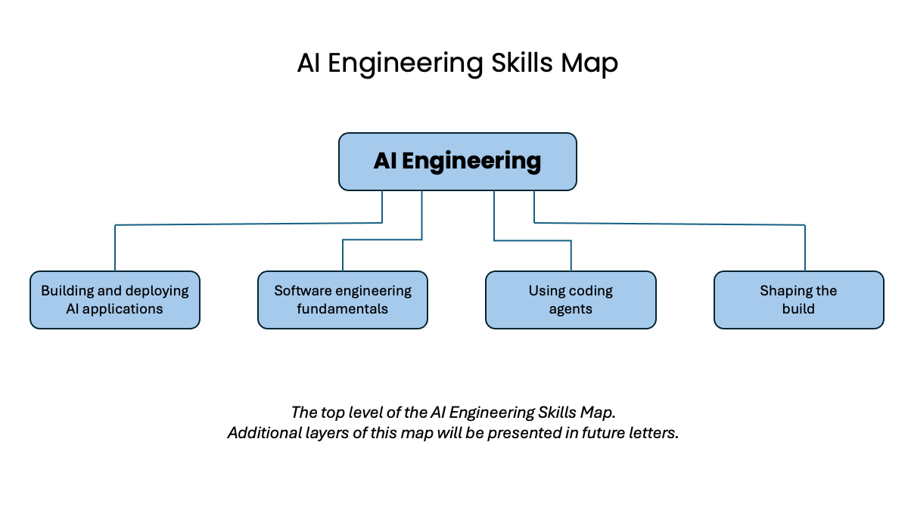
AI 모델의 불완전성을 다루면서도 신뢰할 수 있는 시스템을 구축하는 것이 현대 AI 엔지니어의 핵심 과제다. 앤드류 응 교수가 제시한 AI 엔지니어링 스킬맵은 RAG나 에이전트 같은 기술 도입보다 프로젝트 요구사항에 맞는 평가 체계(Evals)와 에러 분석 루프를 체계적으로 운영하는 능력을 진정한 역량의 차별점으로 강조한다. 실무 중심의 AI 시스템 아키텍처 설계를 고민하는 엔지니어들을 위한 명확한 학습 방향을 제시한다.
핵심 포인트: 핵심 기여: AI 엔지니어가 우선 학습해야 할 기본기는 기술 스택이 아니라 불완전한 모델로부터 신뢰도 높은 시스템을 구축하기 위한 평가와 에러 분석의 체계적 운영이라는 점을 명확히 함.
🔗 deeplearning.ai/the-batch/the-ai-engineer…
기타 (Others)

schift-ko-pii — 한국어 개인정보 탐지 특화 경량 모델
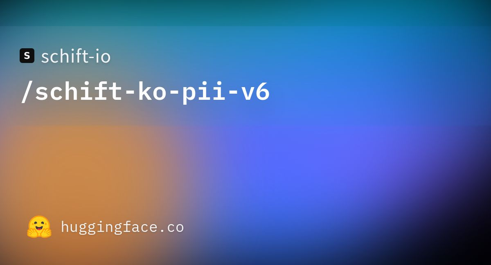
RAG 시스템에 고객사 문서를 적재할 때 주민번호, 여권번호 등 개인정보가 LLM 컨텍스트, 로그, 임베딩, 캐시에 남아 보안 사고로 이어지는 문제를 해결한다. 기존 HuggingFace의 1.4B급 영어 기반 모델들은 한국 특화 정보(주민번호, 한국식 성씨 등)를 제대로 탐지하지 못했으나, 34M 크기의 schift-ko-pii는 F1 0.909 점수로 40배 더 큰 모델들을 능가한다. 공무원, 금융, 법률 분야에서 ingest 전 PII 필터링에 활용할 수 있다.
핵심 포인트: 핵심 성과: 34M 경량 모델이 1.4B급 대규모 모델 4개(FrameByFrame F1 0.642, OpenAI privacy-filter F1 0.446, OpenMed F1 0.361)를 모두 능가하며 F1 0.909 달성. 한국 주민번호, 여권번호, 차량번호, 희귀 성씨 등 한국어 특화 PII 탐지 지원.
🔗 huggingface.co/schift-io/schift-ko-pii-v6
기타 (Others)
CentaurBench — LLM의 자동화 능력과 보조 능력은 별개
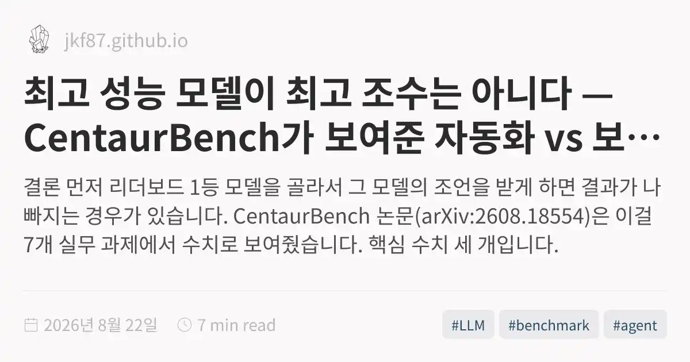
LLM 평가에서 자동화 작업 1등 모델의 조언을 받으면 오히려 결과가 나빠지는 현상을 발견한 논문. CentaurBench는 7개 실무 과제에서 LLM을 두 역할로 나눠 평가했다. 자동화 모드에서는 모델이 직접 수행하고, 보조 모드에서는 모델이 가이드만 제공하고 고정된 워커(GPT-3.5-Turbo)가 최종 결과물을 작성하도록 설계했다. 연구 결과 자동화 1등과 보조 1등이 7개 중 5개 과제에서 다르게 나타났으며, 두 순위의 스피어만 상관계수는 0.48으로 겹치는 부분이 절반 수준임을 보여주었다.
핵심 포인트: 핵심 성과: 자동화 1등 모델과 보조 1등 모델이 71% 일치하지 않으며(5/7 과제), 스피어만 상관은 0.48으로 나타났고, 보조 없이 혼자 일한 워커가 모든 보조 조건을 이긴 과제는 3개(운영연구, 세금, 여행 계획)로 확인되었다.
🔗 jkf87.github.io/posts/2026-08-22-centaurb…
기타 (Others)
SauerkrautLM ColBERT — 유럽 7개 언어 대응 Late-Interaction 검색 모델
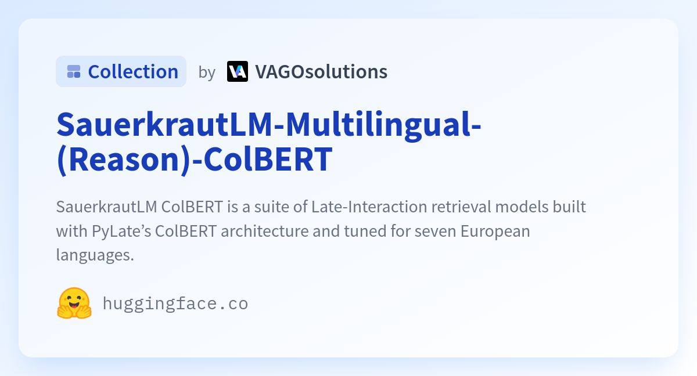
기존 임베딩 검색은 문서와 질의를 단일 벡터로 압축하여 정보 손실이 발생하는 문제가 있다. SauerkrautLM ColBERT는 PyLate의 ColBERT 아키텍처 기반 Late-Interaction 방식으로 검색 시점에 더 세밀한 비교를 수행하여 문장 간 의미 유사도를 정확히 측정한다. 유럽 7개 언어에 최적화된 7개 모델(15.3M~0.2B 파라미터)을 제공하여 다국어 검색 및 문서 매칭 파이프라인에서 용도와 운영 환경에 맞게 선택할 수 있다.
핵심 포인트: 핵심 기여: Late-Interaction 방식으로 기존 임베딩 검색보다 정밀한 문장 유사도 측정을 실현하며, 15.3M부터 0.2B까지 다양한 파라미터 크기의 모델을 제공하여 유연한 배포 옵션을 지원한다.
🔗 huggingface.co/collections/VAGOsolutions…
기타 (Others)
Ox Alpha — Fable 5 능가하는 익명 모델 무료 공개
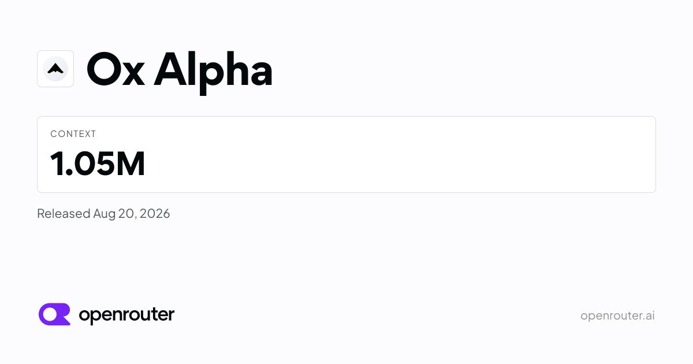
프런티어급 AI 모델의 성능 경쟁이 심화되면서 익명 모델 Ox Alpha가 오픈라우터와 오픈코드에서 무료로 테스트 중이다. 코딩 벤치마크 DeepSWE에서 80%의 정확도를 기록하며 Fable 5(65%), GPT-5.6 Sol(52%)을 능가했고, 100만 토큰 컨텍스트와 이미지·영상 입력을 지원한다. 운영사는 하루 100조 토큰을 무료로 제공하고 있으며, 토크나이저 특성상 중국 AI 랩 Z.ai의 차기 모델로 추정된다. 이는 프런티어급 모델의 급격한 가격 하락과 AI 모델 무료화 추세를 시사한다.
핵심 포인트: 핵심 성과: DeepSWE 코딩 벤치마크에서 80% 정확도로 Fable 5 대비 15%p 우수, 100만 토큰 컨텍스트 윈도우와 멀티모달 입력 지원, 하루 100조 토큰 무료 제공으로 프런티어급 모델의 무료화 가속화.
🔗 openrouter.ai/stealth/ox-alpha
기타 (Others)
LLMs Get Lost in Evolving User Intent — 멀티턴 대화에서 의도 추적 실패
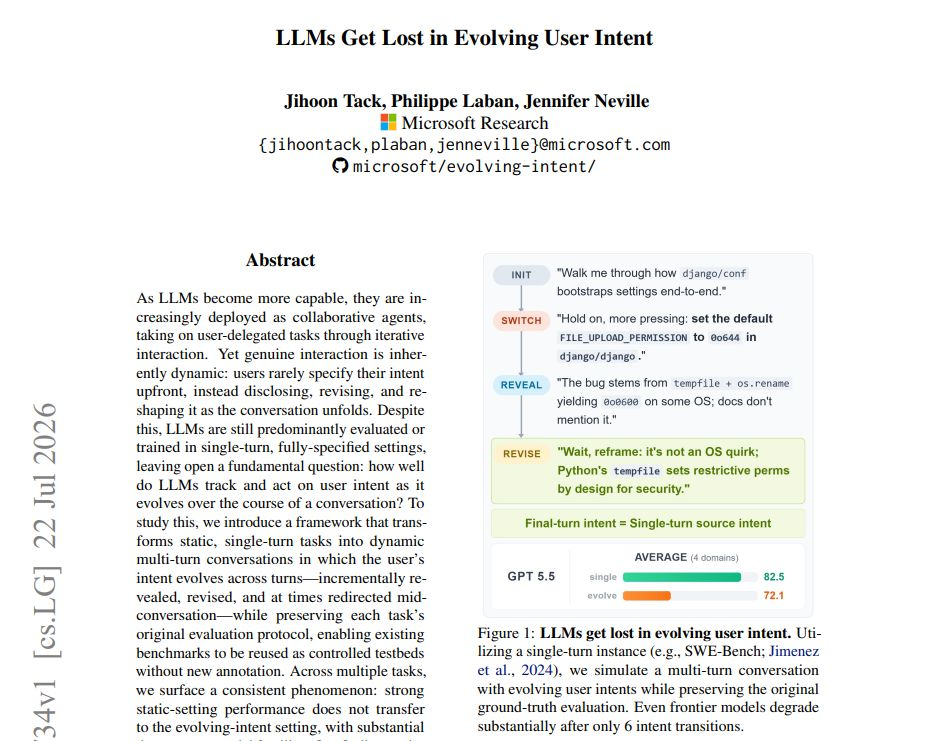
LLM이 단일 턴에서는 9899% 정답률을 보이지만, 사용자의 의도가 7턴 이내에 변경되면 성능이 1530% 이상 폭락하는 문제를 제시한다. Microsoft Research 논문은 이 문제가 기억력 부족이 아니라 변경된 조건을 버리고 최신 의도에 집중하는 ‘상태 관리’ 능력의 부재임을 규명했다. 단 50스텝의 GRPO 강화학습만으로 멀티턴 방어율을 64%에서 76%로 개선할 수 있음을 실증하며, 정렬(Alignment) 문제로의 재정의를 통해 간단한 해결책을 제시한다.
핵심 포인트: 핵심 기여: 정보 추가, 조건 수정, 작업 전환 등 3가지 동적 변화를 포함한 평가 프레임워크 구축 및 소규모 4B 모델에서 짧은 강화학습(50스텝)만으로 12% 성능 개선 달성
🔗 linkedin.com/posts/kiwoong-yeom_우리는-llm에게…
논문 (Papers)
DEVTOOLS & OPEN SOURCE
gpt-image-skill — Claude Code에 ChatGPT 이미지 생성 기능 추가
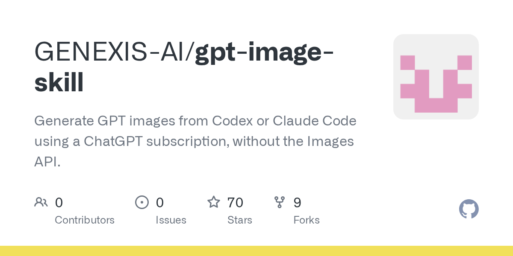
Claude Code는 강력한 코드 생성 도구지만 이미지 생성 기능이 부재하다는 제약이 있다. gpt-image-skill은 이를 해결하는 스킬로, 사용자의 ChatGPT 구독을 통해 Claude Code 내에서 직접 이미지를 생성하고 편집할 수 있게 한다. 별도 API 키 발급이나 추가 요금 없이 작동하며, 참조 이미지로 스타일을 맞추거나 결과물을 반복 수정할 수 있고, 생성된 이미지는 현재 작업 폴더에 자동 저장된다.
핵심 포인트: 핵심 기여: ChatGPT 구독 한도 내에서 작동하므로 별도 Images API 요금 없이 사용 가능하며, 참조 파일 입력 지원과 배치 병렬 처리로 효율적인 이미지 생성 및 편집을 지원한다.
🔗 github.com/GENEXIS-AI/gpt-image-skill
GitHub
Cursor Thermo-Nuclear Code Quality Review — 극단적 코드 품질 심사 플러그인
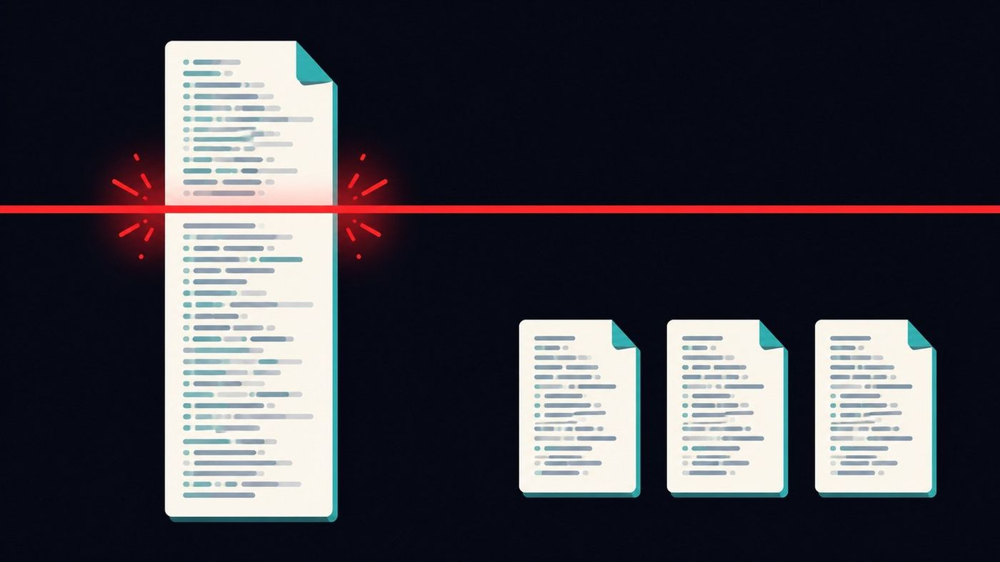
개발자들이 코드 리뷰 중 울 정도로 강한 지적을 받는 문제가 발생하고 있다. Cursor 플러그인의 Thermo-Nuclear Code Quality Review 스킬은 구조 단순화, 파일 크기 제한, 스파게티식 코드 금지라는 세 가지 엄격한 규칙으로 코드 품질을 극단적으로 심사한다. 새 프로젝트 시작 시 구조가 고착되기 전에 사용하면 설계 단계부터 건전한 아키텍처를 확보할 수 있다.
핵심 포인트: 핵심 기여: 코드 judo 원칙으로 동작 유지하면서 구현을 극적으로 단순화하고, 1천 줄 레드라인 규칙으로 파일 크기 증가 억제, 임시 if와 플래그 남용을 설계 문제로 인식하는 엄격한 검사 기준 제시.
🔗 threads.com/@unclejobs.ai/post/DcfUPiyDJH…
기타 (Others)
oh-my-pi — IDE 통합 터미널 코딩 에이전트
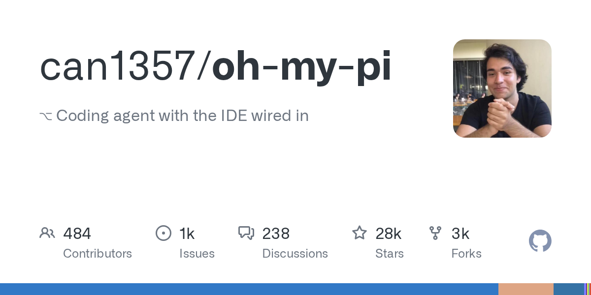
개발자가 코드 작성 시 IDE와 디버거를 별도로 전환하며 사용해야 하는 비효율성을 해결하는 오픈소스 코딩 에이전트. Pi 기반으로 확장된 oh-my-pi는 60개 이상의 프로바이더, 31개 내장 도구, 14개 LSP 작업, 28개 DAP 작업을 통합하고, Hashline 편집으로 콘텐츠 해시 기반 앵커를 사용해 잘못된 위치에 코드가 적용되는 오류를 방지한다. Grok Code Fast 1에서 첫 시도 성공률을 6.7%에서 68.3%로 향상시켰다.
핵심 포인트: 핵심 성과: Grok Code Fast 1 성공률 68.3% 달성(6.7% 대비 10배 이상 개선), Grok 4 Fast 출력 토큰 61% 감소, MiniMax 통과율 2.1배 증가, GitHub 별 2.68만 개 달성.
GitHub
Agent Plugins 1.0 — 에이전트 간 호환 스킬 표준 공개
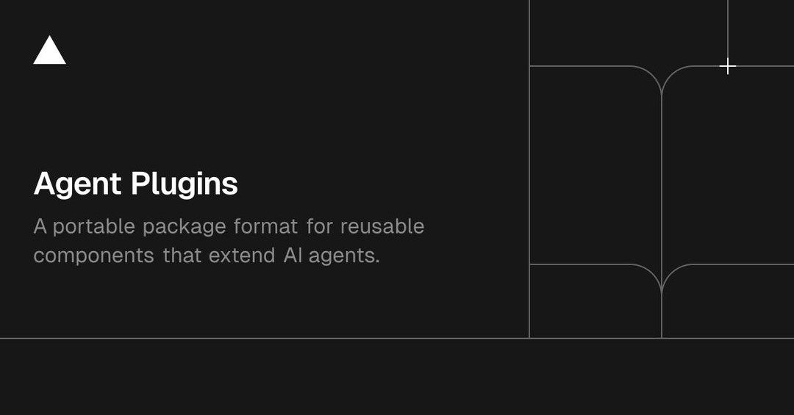
현재 AI 에이전트마다 스킬 포맷이 다르기 때문에 한 플랫폼에서 만든 스킬을 다른 에이전트로 옮기려면 처음부터 다시 개발해야 한다. AWS, 구글, OpenAI, Cursor, GitHub, Vercel 등 6개 기업이 개발한 Agent Plugins 1.0은 에이전트 스킬과 MCP 서버 설정을 통합 패키지로 규격화하여 한 번 만든 스킬을 모든 호환 에이전트에서 바로 재사용할 수 있게 해준다.
핵심 포인트: 핵심 기여: 스킬 포맷 표준화로 개발자가 작성한 AI 에이전트 교육자료를 범용 자산으로 전환하여 개발 생산성을 크게 향상시킨다. Anthropic은 자체 Skills API를 동시에 출시하며 표준화 연합과 독자 기술 노선이 병존하는 상황이 형성되었다.
🔗 threads.com/@unclejobs.ai/post/DcZ8656DOv…
기타 (Others)
Claude ELI5 — 복잡한 개념을 시각화로 쉽게 설명하는 스킬
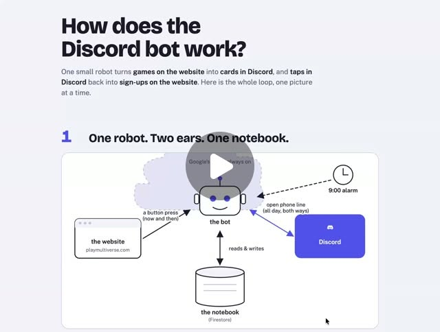
복잡한 기술이나 설계 개념을 이해하기 어려운 개발자들의 문제를 해결하기 위해 앤트로픽 Claude Code 팀이 개발한 ELI5 스킬. 슬래시 커맨드로 궁금한 주제를 입력하면 5살 아이에게 설명하듯 텍스트는 최소화하고 시각적 HTML 자료 한 장으로 핵심을 전달한다. 모듈 작동 원리, 설계 선택 이유, 장애 원인 등을 코드 분석 전에 한눈에 파악할 수 있어 개발 효율을 높인다.
핵심 포인트: 핵심 성과: 커뮤니티 플러그인 마켓에서 Claude Code에 직접 설치 가능하며, 복잡한 기술 개념을 시각 중심의 단일 HTML 자료로 변환하여 코드 리뷰 및 문제 해결 전 이해도를 크게 향상시킨다.
🔗 threads.com/@choi.openai/post/DcVKontDnVc…
기타 (Others)
Sentence Transformers v6.0: ColBERT 스타일 멀티 벡터 검색 지원
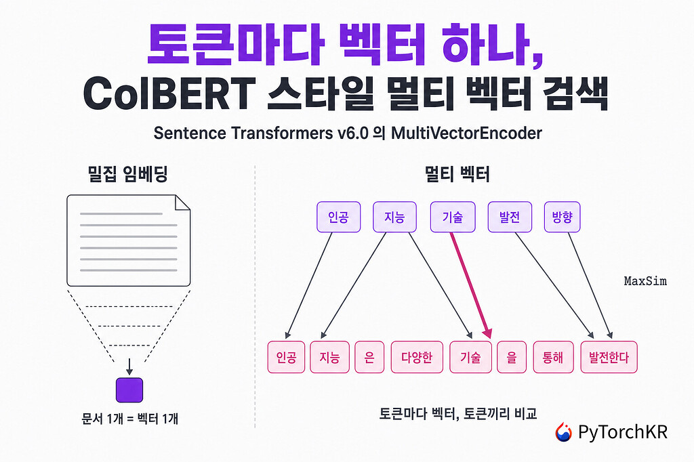
기존 임베딩 모델은 텍스트 전체를 하나의 벡터로 압축하면서 토큰 단위의 매칭 정보를 손실하는 문제가 있다. Sentence Transformers v6.0의 MultiVectorEncoder는 각 토큰마다 개별 벡터를 유지하고 MaxSim 연산자로 질의와 문서를 비교하는 Late Interaction 방식을 표준 API로 제공한다. 이를 통해 상품 코드나 함수명 같은 정확한 토큰 매칭이 필요한 검색에서 검색 품질을 향상시키며, 시각 문서 검색에서도 OCR 없이 최고 성능을 발휘한다.
핵심 포인트: 핵심 성과: Natural Questions 4,874개 passage 인덱싱 시 토큰별 벡터 방식으로 일반 모델 대비 42배 큰 색인 생성하나 PLAID 압축으로 92MB까지 축소 가능하며, PyLate와 Stanford ColBERT 체크포인트를 동일 API로 지원.
🔗 discuss.pytorch.kr/t/sentence-transformer…
기타 (Others)
Claude Code v2.1.237 — 간결한 출력 스타일 추가
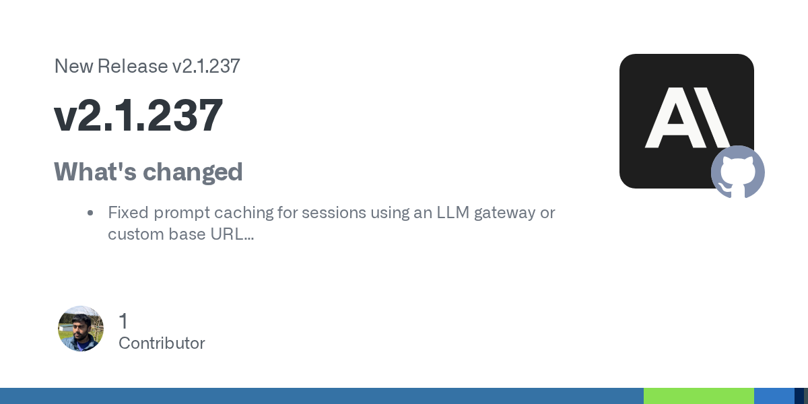
Claude Code 사용자들이 AI의 장황한 설명을 지적하자, Anthropic이 새로운 Concise 출력 스타일을 추가했다. 이 스타일은 결과를 먼저 제시하고 서문과 설명을 생략하면서도 동일한 수준의 작업을 수행한다. 사용자는 설정 메뉴의 Output style에서 간단히 활성화할 수 있으며, 동시에 사용 한도 도달 시 자동 세션 복구 기능도 개선되었다.
핵심 포인트: 핵심 성과: Concise 모드로 불필요한 전문(preamble)을 제거하면서 작업 품질은 유지하고, 사용 한도 리셋 후 자동 세션 연속 실행으로 밤샘 작업 시 모니터링 필요성 제거
🔗 github.com/anthropics/claude-code/release…
GitHub
ENGINEERING
Claude — 스트리밍 렌더러 최적화로 4배 빠른 응답 체감
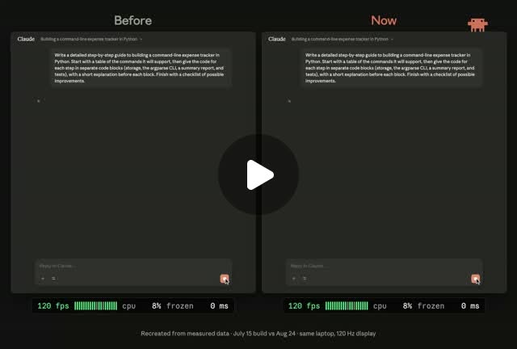
Claude 웹과 데스크톱에서 긴 답변을 렌더링할 때 토큰이 도착할 때마다 전체 응답을 다시 그리는 비효율성으로 인해 성능 저하가 발생했다. 앤트로픽은 모델 자체를 수정하지 않고 변한 부분만 선택적으로 갱신하는 스트리밍 렌더러 재설계를 통해 긴 답변의 부드러움을 4배 향상시켰고, 느린 노트북에서의 프리징 현상을 9배 감소시켰다. 120Hz 맥북에서는 처음부터 끝까지 120fps를 유지한다.
핵심 포인트: 핵심 성과: 최악의 프리징이 4.5배 단축되었고, 발표 24시간 내 83만 조회를 기록한 프론트엔드 최적화 업데이트. 변경된 부분만 선택적으로 다시 렌더링하는 기본기 원리로 모델 수정 없이 체감 성능을 극적으로 개선했다.
🔗 threads.com/@unclejobs.ai/post/Dcd_Hx8k-b…
기타 (Others)
PRODUCT & INDUSTRY
Gemini Enterprise for Legal — 구글의 산업별 AI 에이전트, 법률 업무 자동화
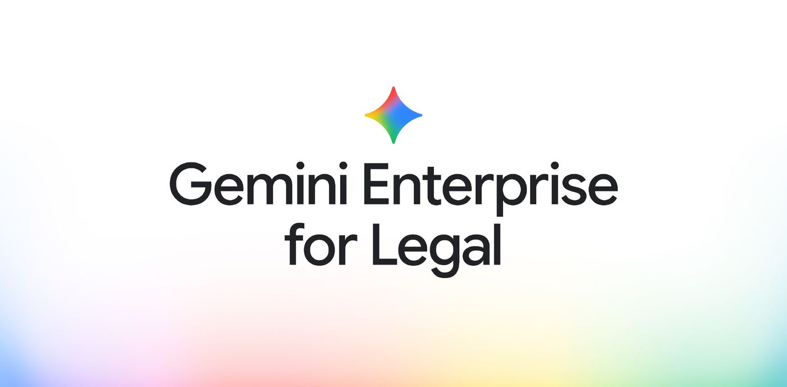
로펌과 기업 법무팀에서 계약 검토와 법률 조사에 소비하는 시간을 단축하기 위해 구글이 산업별 특화 AI 솔루션을 출시했다. Gemini Enterprise for Legal은 MCP 커넥터를 통해 iManage, DocuSign, Everlaw, Thomson Reuters HighQ, Harvey 등 기존 법률 시스템과 연동되어 계약 검토, 법률 리서치, 규제 변화 추적을 AI 에이전트로 지원한다. 동시에 금융 서비스 분야용 버전도 공개되었으며, 향후 의료와 생명과학 등 다른 산업으로 확대될 예정이다.
핵심 포인트: 핵심 성과: 기존 법률 시스템과의 완벽한 연동을 통해 로펌의 계약 검토 업무 시간 단축 및 업무 효율성 향상 달성, 고객 데이터가 기본 모델 학습에 사용되지 않아 기업용 보안 및 윤리 기준 충족.
🔗 cloud.google.com/blog/products/ai-machine…
기타 (Others)
Claude Enterprise — 회사 계정 하나로 모든 도구 접근 권한 관리
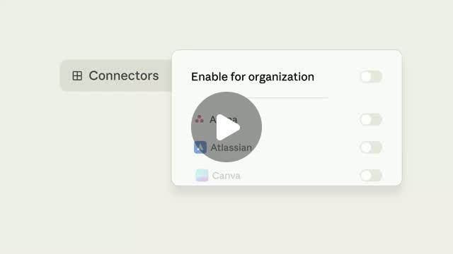
엔터프라이즈 환경에서 클로드를 슬랙, 노션 등 외부 도구와 연결할 때마다 개별 로그인 절차를 거쳐야 하는 문제를 해결한다. 앤스로픽이 정식 출시한 Enterprise-managed auth for MCP connectors는 관리자가 회사 신원 제공자(IdP)로 중앙에서 권한을 일괄 설정하면, 사용자는 별도 로그인 없이 연결된 도구에 바로 접근할 수 있게 한다. 아사나, 슬랙, 노션, 피그마 등 10개 주요 서비스를 지원하며 IT 관리자의 권한 관리 부담을 크게 경감한다.
핵심 포인트: 핵심 성과: Asana, Atlassian, Canva, Datadog, Figma, Granola, Linear, Notion, Slack, Supabase 10개 파트너 서비스 지원 및 자체 MCP 커넥터에도 동일 인증 방식 적용 가능, 퇴사자 권한 해제 등 권한 관리를 회사 신원 제공자 중심으로 통합.
🔗 threads.com/@metallabai/post/DccGt5vkjbx?…
기타 (Others)
Koboyo Icons — 13만 개 손그림 SVG 아이콘 라이브러리
기계적이고 딱딱한 아이콘 디자인이 필요한 콘텐츠 제작자들의 문제를 해결하는 서비스. Koboyo Icons는 13만 개 이상의 손그림 느낌 SVG 아이콘을 무료로 제공하여, 블로그, 프레젠테이션, 디지털 콘텐츠에 자연스럽고 친근한 시각적 요소를 더할 수 있게 한다.
핵심 포인트: 핵심 성과: 135,610개의 무료 손그림 SVG 아이콘을 제공하여 기계적 느낌 대신 따뜻한 손그림 스타일의 아이콘으로 콘텐츠 완성도 향상
기타 (Others)
Exa — AI 에이전트를 위한 웹 검색 플러그인
AI 에이전트가 코드 작성만 수행하던 기존 방식의 한계를 벗어나, 웹에서 실시간 정보를 수집하고 분석해야 할 필요성이 대두되고 있다. Exa 플러그인은 에이전트가 100억 개 웹사이트를 직접 검색하고 핵심 정보를 추출한 후 이를 코드에 즉시 반영할 수 있도록 지원한다. 단순 검색 결과 제공을 넘어 실제 사이트 콘텐츠를 분석하여 정보를 정리해주므로, 리서치나 시장 조사 업무를 자동화할 수 있다.
핵심 포인트: 핵심 성과: 플러그인 설치 한 번으로 에이전트가 자동으로 웹 검색, 정보 추출, 코드 반영을 수행하며, 경쟁사 분석, 시장 동향, 트렌드 조사 등의 리서치 업무를 완전 자동화한다.
기타 (Others)
Harvey — 미국 법률 AI 1위의 첫 자체 모델 Tenet 공개
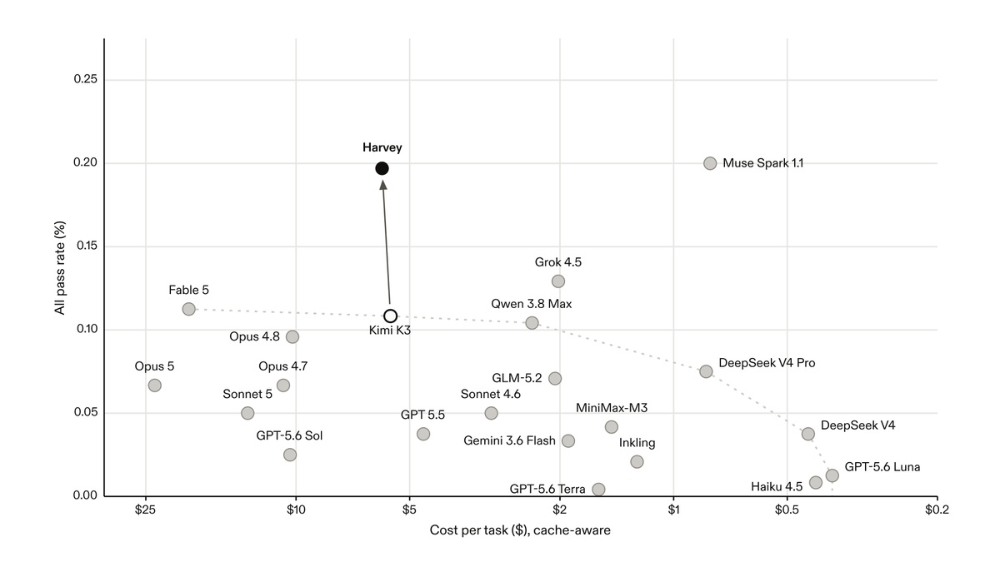
프런티어 모델에 의존하던 법률 AI 기업 Harvey가 중국 Moonshot의 Kimi K3를 기반으로 공개 판례와 변호사 전문가 데이터로 강화학습한 자체 모델 Tenet을 출시했다. 법률 에이전트 벤치마크에서 통과율 82% 상승을 달성했으며, M&A 실사, 문서 검토, 지식 검색 등 세 개의 전문 서브에이전트를 별도 훈련해 비용은 프런티어 모델의 4분의 1 이하로 줄였다.
핵심 포인트: 핵심 성과: 자체 법률 에이전트 벤치마크에서 베이스 대비 82% 성능 향상, 계약 부문 최고 기록 달성, 프런티어 모델 대비 비용 75% 절감.
🔗 threads.com/@choi.openai/post/DcVz2EmAH9…
기타 (Others)
Claude Enterprise: Mythos 5를 활용한 보안 스캔 공개 베타
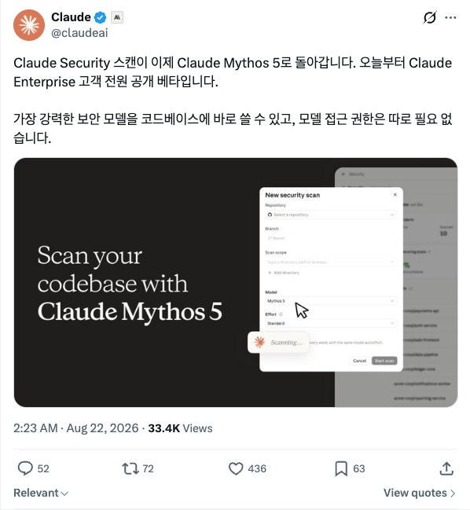
기업들이 코드베이스의 보안 취약점을 효과적으로 탐지하기 어려운 상황을 해결하기 위해 Anthropic이 Claude Enterprise 사용자를 위한 보안 스캔 기능을 공개 베타로 출시했다. Mythos 5 모델을 기반으로 GitHub 저장소를 분석하여 취약점을 자동 탐지하고 CWE 분류, 심각도 평가, 수정안을 제공하며, 패치는 웹 Claude Code에서 직접 검토 및 적용할 수 있다.
핵심 포인트: 핵심 기여: 모델 추가 권한 없이 엔터프라이즈 급 보안 분석 수행 가능하며, 자동 취약점 탐지부터 CWE 분류, 심각도 평가, 패치 제안까지 전체 보안 스캔 워크플로우 통합 제공.
🔗 threads.com/@k_dangerously_skip_permissio…
기타 (Others)
LangChain CX Agents — 프로덕션 로그 분석으로 AI 에이전트 오류율 13%에서 1%로 단축
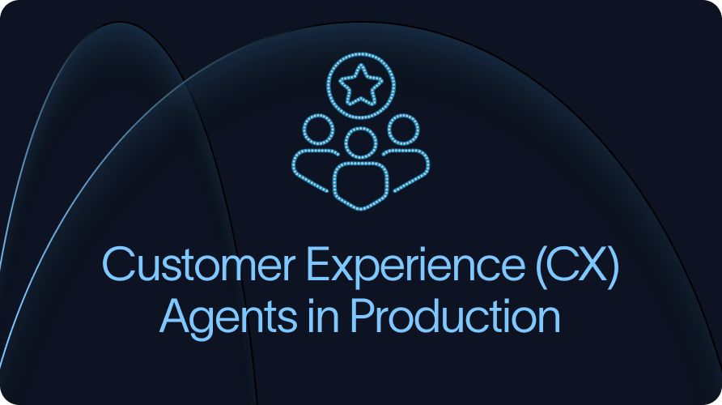
프로덕션 환경의 AI 고객 서비스 에이전트가 처리 불가로 표시한 요청의 95%가 실제로는 고객의 핵심 요구사항이었다는 문제를 LATAM 항공 사례에서 발견했다. 트레이스 로그를 상세히 분석하여 AI가 놓친 실제 맥락을 파악하고 전문 에이전트를 보완함으로써 오류율을 13%에서 1%까지 단축했다. 에이전트 고도화는 추측성 프롬프트 수정이 아닌 실제 운영 데이터 기반의 지속적인 테스트, 배포, 모니터링, 반복을 통해 이루어져야 함을 보여준다.
핵심 포인트: 핵심 성과: LATAM 항공에서 프로덕션 로그 분석 기반 에이전트 개선으로 오류율을 13%에서 1%로 단축. 에이전트 고도화는 구조화된 워크플로우 결정, 실제 고객 상호작용 학습, 브로드 고객 경험 개선으로 확대된다.
🔗 langchain.com/resources/customer-experien…
기타 (Others)
Notion — 사이드바 완전 커스텀 기능 곧 출시
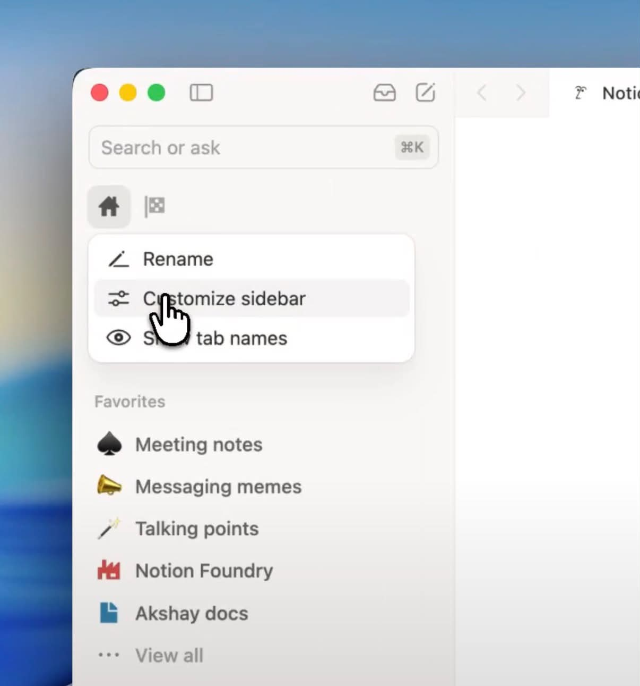
노션 사용자들이 워크스페이스 구성을 자유롭게 커스터마이징하기 어려운 문제를 해결하기 위해 Notion이 완전한 사이드바 커스텀 기능을 준비 중이다. 사용자들은 탭 이름, 아이콘을 자유롭게 설정하고 탭 내부 섹션을 다양하게 조합할 수 있으며, 여러 커스텀 탭을 생성하여 자신의 워크플로우에 맞는 환경을 구성할 수 있게 된다.
핵심 포인트: 핵심 기여: 사이드바 탭 명칭과 아이콘 자유로운 설정, 탭 내 섹션 다양한 조합, 다중 커스텀 탭 생성으로 사용자 맞춤형 워크스페이스 구현 가능
🔗 threads.com/@notion_mober/post/DcRySp_k_x…
기타 (Others)